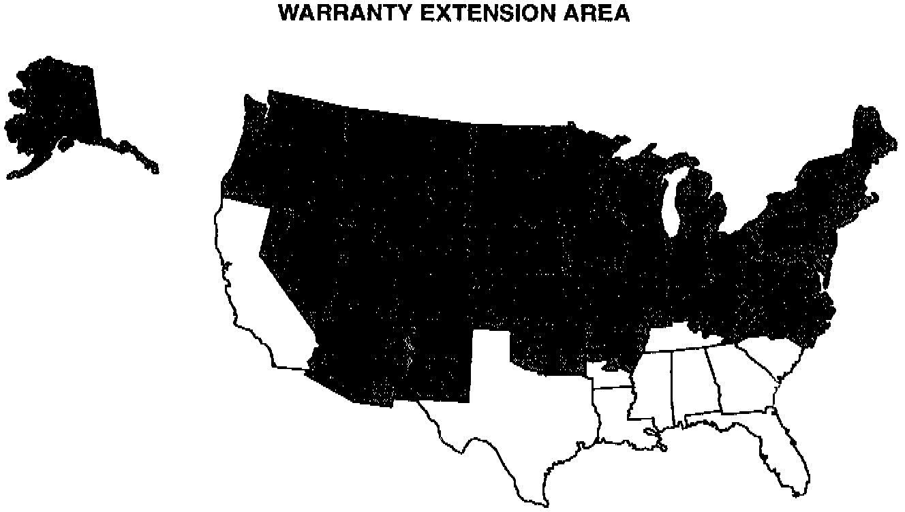
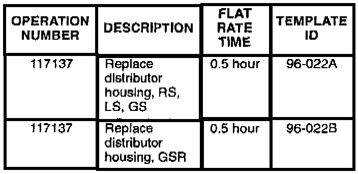

Warranty Extension - Distributor: Overview
June 11, 1996BULLETIN NO.
96-022
YEAR
1992 - 93
MODEL
INTEGRA
VIN APPLICATION
See VEHICLES AFFECTED
Warranty Extension: 1992 - 93 Integra Distributor
BACKGROUND
Climate and driving conditions in the southeastern part of the U.S., California, Hawaii, and Puerto Rico may cause the distributor bearing to develop excessive clearance. If this happens, the engine will not start.
This problem is rare in the northern part of the country. However, in the interests of customer satisfaction, American Honda is extending the warranty on the distributor assembly in that area to 6 years or 100,000 miles, whichever comes first.
VEHICLES AFFECTED
1992 Integra: ALL
1993 Integra:
2-door RS, LS, GS - Thru VIN JH4DA9...PS021690
4-door RS, LS, GS - Thru VIN JH4DB1...PS003558
2-door GSR - Thru VIN JH4DB2...PS000804
GENERAL INFORMATION

Owners who live in the shaded area of the map shown will be notified that the warranty on the distributor assembly has been extended. They will be advised to contact the dealer for repair only if the distributor fails. The text of the customer letter is at the end of this service bulletin.
A Product Update Campaign is being conducted in the southeastern U.S. California, Hawaii, and Puerto Rico. Refer to the maps and zip code information in service bulletin 96-015, Product Update Campaign: 1992 - 93 Integra Distributor
The shaded area in the map shows the states that are included in the Warranty Extension. Two states, Arkansas and Tennessee, are partly in Region B of the Product Update, and partly in the Warranty Extension area.
Arkansas - If the first two digits of the customer's zip code are 71, then that customer is in Region B of the Product Update. If the first two digits are not 71, then the customer is covered by the warranty extension.
Tennessee - If the first two digits of the customer's zip code are 38, then that customer is in Region B of the Product Update. If the first two digits are not 38, then the customer is covered by the warranty extension.
CORRECTIVE ACTION
When the customer's car comes in with a failed distributor, replace the distributor housing assembly with the new assembly listed under PARTS
INFORMATION. Use the existing coil, igniter, leak cover, rotor, cap seal, and distributor cap.
Diagnosis
Inspect the distributor bearing for excessive clearance by confirming one or more of the following:
^ Excessive noise when the distributor is rotated.
^ Red or brown dust inside the distributor.
^ The distributor shaft will not turn.
PARTS INFORMATION
Distributor housing assembly:
RS, LS, GS - P/N 06301-PR4-A01
GSR - P/N 06301-P30-A01
WARRANTY CLAIM INFORMATION

Failed P/N: 30102-PT2-016
Defect code: 722
Contention code: K09